On-the-Fly Shortest Path QGIS plugin
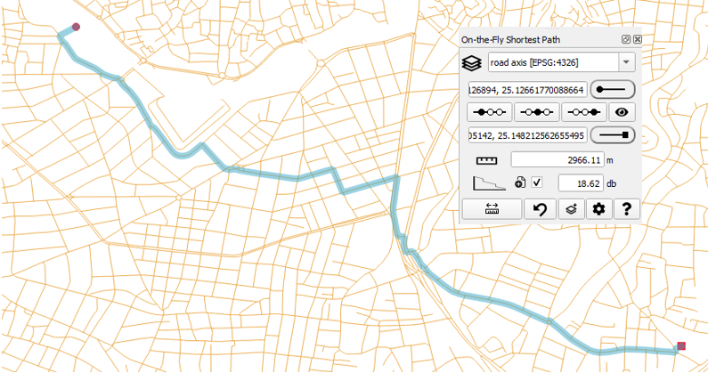
Introduction
The “On-the-Fly Shortest Path” QGIS plugin offers an interactive measurement of distances along a line network, operating directly on the map. It calculates Distance and the Fiber Loss Budget in fiber optic networks (backbone or FTTH).
The plugin makes use of the Dijkstra algorithm of the core Network Analysis library of QGIS in order to calculate the shortest path and to measure the distance from start to end.
Subsequently, it calculates the Fiber Loss Budget of this path, considering several configured parameters (connector loss, splice loss, fiber attenuation, splitters etc.).
In contrast to similar algorithms of the Processing toolbox, this plugin does not create a new layer for every measurement but rather presents the path and the calculated parameters directly on screen, allowing for massively continuous measurements, hence the "On-the-Fly" name of this plugin. This functionality is similar to the original RoadGraph plugin of QGIS2.
In addition, the plugin allows the setting of optional middle points, forcing the path to go first from the start point to each one of the middle points and finally to the end point. This is helpful in networks with multiple paths between the start and stop point where the user wants to direct the algorithm to use a preferred path.
Quick links
Online documentation is available, containing the details of the latest release.
- Usage instructions
- Configuration parameters
- Installation
- Handling of multiple layers
- Online documentation
What's new in version 1.3.0
Previous versions of the plugin solved the basic problem of setting the on-the-fly start and end markers and combined line layers, waiting passively for the Dijkstra algorithm to identify the shortest path. Only a basic functionality was given to the user in selecting the routing, namely the middle markers (i.e. "prefer that way instead of the other way"). The topology tolerance tool also provided a basic tool to address topological discontinuities. Version 1.3.0 provides the user with additional control of the routing, using new tools of the plugin.
The Bridging Point tool solves the problem of topological discontinuities at the termination of line segments to point layers. As an example, trenches of a utility network usually terminate onto a manhole layer. The tool allows for a search radius that subsequently extends the lines to reach the point, even if the lines have not been snapped to the points. The shortest path algorithm may then use the point as a bridge to cross to other layers that also terminate to that point
The On-the-fly Bridging Point tool provides similar functionality to the Bridging Point tool, but, as the name suggests, can be created by the user on the screen and can be used for "interactive" network analysis, without having to create a new layer from scratch. Several trial-and-error analysis scenarios may benefit from this functionality.
The Bridging Point tool solves the problem of conducting an analysis on layers that have been designed with specifications that restrict or inhibit the shortest path analysis. As an example, two directions of a highway may have been represented on a line layer with two distinct, non-intersecting lines. The tool allows to create a bridge between the lines and offer an additional way to be exploited by the Dijkstra algorithm.
Other features have also been added in 1.3.0. In summary, the main new features are:
- Introduced the flexjLine tool to set start, middle and end markers in sequence, using a rubberband tool. The tool also provides a measuring capability
- Introduced the bridgingPoint tool, to allow on-the-fly creation of points interconnecting lines of different layers, as well as lines of the same layer
- Introduced the bridgingLine tool, to allow on-the-fly creation of bridges between vertices and segments
- Introduced limit functionality to assist in running the algorithm on layers with a huge number of features
Support, Issues and new features
The plugin documentation can be found online in the project page.
Github registered users may report bugs in the Github issues URL. Others may send a mail to info@fryktoria.com
You can participate in the development with new ideas, using the Github discussions URL.
Installation
Install from the official QGIS plugin repository
-
From the QGIS toolbar, select
Plugins -> Manage and Install Plugins.... -
From the panel on the left side of the
Plugins|Settingswindow, selectAll. Navigate the list to locate the plugin nameOn-the-Fly Shortest Pathand pressInstall Plugin. Optionally, you can use theSearch...facility to locate the plugin by typing its nameOn-the-Fly Shortest Path.
Install from a zip file
Releases of the plugin in zip file format are available on the Releases section of Github.
-
Download the zip file containing the plugin to a directory of your choice.
-
From the QGIS toolbar, select
Plugins -> Manage and Install Plugins.... -
From the panel on the left side of the new form, select
Install from ZIP. Select the file downloaded in step 1.
After installation is complete, you should be able to see the plugin name in the list of installed plugins.
Also, to confirm that installation was made properly, from the QGIS toolbar, select View -> Panels. You should see the On-the-Fly Shortest Path in the list of panels. Activate it by clicking on the checkbox.
Build from Github sources
Follow these instructions if you want to create manually a zip file to install into QGIS using the process described in the Install from a zip file section.
- Download all files from Github
- Create a directory named
On-the-Fly-Shortest-Pathand move all files to this directory - Use your favorite compression tools to create a zip file which contains the directory and not the individual files. This structure is mandatory so that the set of files is understood by QGIS as a plugin.
- Install the plugin using the procedure in Installation section.
Activation
The plugin panel should be visible on the left-hand side of the QGIS screen. If you do not see it, first make sure that the plugin is activated.
-
From the QGIS toolbar, select
Plugins -> Manage and Install Plugins.... -
The window
Plugins|Settingswill open. From the panel on the left side of the window, selectInstalled. Navigate the list to locate the plugin nameOn-the-Fly Shortest Path. Activate it by clicking on the checkbox on the side of the plugin name.
Next, activate the plugin panel.
- Select
View -> Panels. You should see theOn-the-Fly Shortest Pathin the list of panels. Activate it by clicking on the checkbox. You should now see the panel, or just the name of the plugin in the lower left side of the left panel. In the later case, adjust the size of the plugin panel by dragging the top border of the panel upwards using the mouse.
Configuration
The plugin offers several user-defined options that can be set via the configuration dialog. To activate this dialog, press the Configure... button in the plugin panel. A new dialog form opens, containing parameters grouped in tabbed sections.
The new settings will be stored locally and will be available next time QGIS is started. The user may reset the settings to the factory defaults by clicking the Defaults button.
Section: Display
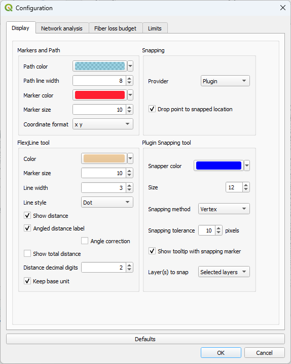
Group: Markers and Path
The Path is the visual element displaying the route from the start marker to the end marker. You can select the desired color/opacity and the line width.
Path color: You can select the desired color and opacity of the path line
Path line width: You can select the desired width of the path line
The Markers are the visual elements showing the start, middle and end points of the shortest path analysis.
Marker color: You can select the desired color and opacity of the Markers.
Marker size: You can select the desired size of the Markers.
The Coordinate format may be selected from a variety of options (with or without a comma separator, xy or yx), so that they can be easily copied and pasted to other applications that require a specific format.
Group: FlejLine tool
The flexjLine tool allows the placement of markers in sequence. It also provides a measurement of the straight line distances between markers.
Color: Select the color and opacity of the flexjLine tool
Marker size: Select the size of the markers which represent the vertices of the flexjLine tool
Line width: Select the width of the flexjLine tool
Line style: Select the line of the flexjLine tool from a variety of options
Show distance: When checked, the ellipsoidal distance is presented at the middle of the line
Angled distance label: The distance normally appears horizontally. When this checkbox is checked, the distance follows the angle of the line.
Angle correction: In some platforms, the calculation of the angle is performed in a different manner. Try checking this checkbox if the distance label does not follow the angle of the line.
Show total distance: The total distance is presented along with the segment distance, measured from the location of the first marker.
Distance decimal digits: Set the number of decimal points for the displayed length of the flexjLine tool.
Keep base unit: When checked, the measurement units are shown (e.g. meters). When unchecked, the system converts large distances to more suitable units (e.g. Kilometers).
Group: Snapping
Provider: Selects the set of algorithms that provides snapping functionality. The following options are available:
Plugin: Use the internal algorithms of the pluginQGIS: Use the snapping functionality of QGISBoth: Use both the plugin and QGIS snapping algorithms.
The plugin algorithms have the advantage of providing a tooltip that presents all underlying layers. They do not provide snapping on intersections. In contrast, the QGIS algorithms do not provide the extended tooltip functionality but provide snapping on intersections. QGIS algorithms are more suitable when working with layers with a huge number of features. In smaller projects, you may also select Both option to have the best of both.
Drop point to snapped location: When this option is checked and a new vertex is about to be snapped to a point, the tools will drop the vertex to the snapped point. Otherwise, the vertex will be created at the mouse location. When unchecked, the vertex will be created at the mouse location, whereas the snapping indicator, if active, will only be there for informational purposes.
Group: Plugin Snapping tool
The following options control the behaviour of the internal snapping tool. The QGIS snapping tool can be controlled via the File -> Project -> Snapping options... QGIS menu.
Snapper color: Selects the color of the snapping tool
Size: Selects the size of the snapping tool
Snapping method: Selects the behaviour of the snapping tool. The following options are available:
None: Snapping tool is disabledVertex: Snapping takes place a) at the vertices of lines, when the cursor is over a linestring and b) at points, when the cursor is over a point layer pointEdge: Snapping takes place during the entire length of lines
The Snapping tolerance parameter defines the minimum distance in pixels at which the tool will identify a nearby element.
Show tooltip with snapping marker: When checked, a tooltip will show all layers within the snapping tolerance.
Layers to snap: Selects the layers that the snapping tool will try to locate features to snap. The following options are available:
All layers: Snaps to all layers.Selected layers: Snaps to layers selected in theLayersselector of the Panel.Active layer: Snaps only to the active layer of the QGIS Layer browser.
Section: Network Analysis
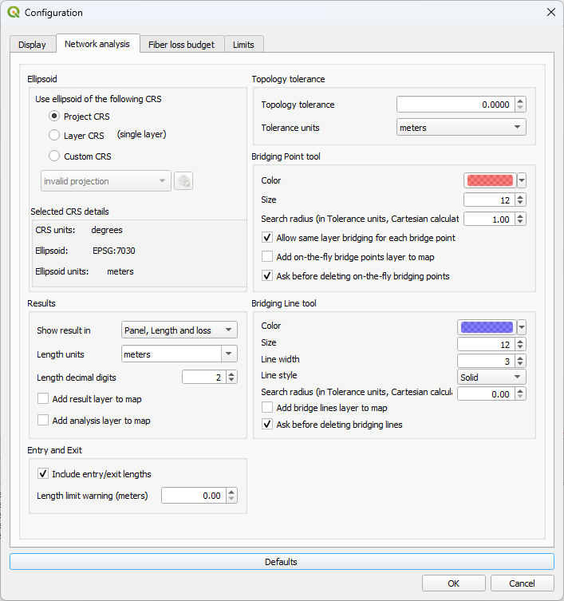
Group: Ellipsoid
Use ellipsoid of the following CRS: Distance measurements are taken based on the ellipsoid associated with the selected CRS. This feature allows viewing the map and coordinates on one CRS and take measurements on another. The following options are provided:
Project CRS: The CRS of the project, as appears on the bottom right side of the QGIS status bar and can be modified for ‘on-the-fly’ CRS transformations is used for measurements.Layer CRS: When one single line layer is selected, the CRS of this line layer is used. Note: When multiple layers are selected, the Project CRS is used instead.Custom CRS: A custom CRS can be selected from the dropdown list. For users who work mainly on a local scale and operate several projects in an area covered by one ellipsoid, it is advised to use this option. Measurements using the ellipsoid and local datum of the custom CRS provide more accurate length results within the extents of the CRS area (e.g. a country).
After selecting the CRS, information labels regarding the ellipsoid associated with the selected CRS, as well as the units of the CRS are updated.
Group: Results
Show result in: You can select from the following options:
Panel, Length and loss: The results of the analysis will appear in the plugin panel. The result will contain the total length, including the entry length, length on the path along the line network and the exit length.Panel, Length only: For users who are not interested in fiber calculations, these data can be hidden, both from the panel as well as from the results window.Window, length and loss: The results will appear both in the plugin panel as well as in a window that will appear on screen. This new window will contain the details of the entry, on the line network and of the exit. Only length information is shown.Window, length only: The results will appear both in the plugin panel as well as in a window. Only length data are presented. The fiber calculations, both in the panel and the result window are hidden.
In Fiber loss calculations, when checked, the result includes the fiber loss from the line to the Start and End markers, such as the connector loss etc. When unchecked, only the fiber attenuation and the splice loss along the line, as well as the Fixed loss amount is calculated. Please refer to Fiber Loss Budget measurements for details.
In Fiber loss calculations, when checked, the result includes the fiber loss from the line to the Start and End markers, such as the connector loss etc. When unchecked, only the fiber attenuation and the splice loss along the line, as well as the Fixed loss amount is calculated. Please refer to Fiber Loss Budget measurements for details.
Result units: Set the type of distance units to present the result. Note: All measurements are made internally in meters and a conversion factor is applied.
Length decimal digits: Set the number of decimal digits presented in the length result.
Add result layer to map: When checked, the result of the analysis will create a new temporary layer. This layer contains as fields all results of the analysis.
Add analysis layer to map: When checked, the layer that was used for the network analysis will appear as a temporary layer. If only one single layer has been selected, no analysis layer is produced since the analysis does not require data from multiple sources. Yet, when limits are applied, or when same layer bridging is prohibited, an analysis layer is created even for a single input layer. The CRS of the layer will be the CRS of the QGIS Project. This was selected instead of the CRS of the analysis, because, no matter how hard QGIS tries to re-project layers, features will be moved at an offset after re-projection on the map. To allow a direct association of the features of the input layers to the analysis layer, the Project CRS was selected. WARNING: For efficient memory usage and especially when layers contain a large number of features, please add layers only when absolutely necessary, e.g. for debugging of a routing analysis. It is advised to delete the analysis layer after debugging is complete, to free-up system memory resources.
Group: Entry and Exit
Controls the behaviour when the start and/or the end marker is not placed directly on a line network
Include entry/exit lengths: When checked, the path is drawn from the Start marker to the nearest point on the line, along the line and finally to the End marker. When unchecked, only the path along the line is drawn. In the latter case, the length of the line shown in the Results area of the Panel will not include the entry and exit lengths.
Length limit warning: Sets a limit in meters for the distance between the start and/or end marker to the line layer. If the distance is higher than the limit, a warning is issued. If the value is set to zero, the warning is disabled.
Group: Topology tolerance
Topology tolerance: Set the topology tolerance as the distance to account for topological discontinuities of the line network. Setting topology tolerance to zero requires the network to having being designed with topological continuity. The crossing from a line segment to the other considers only the vertices of both lines. The topology tolerance value signifies the minimum distance between vertices of two lines that the algorithm will consider as eligible to cross. This functionality can also be evident in one single layer, where a tolerance value larger than the distance between consecutive segments of a line, may cause the path to bypass one or more vertices of the line and go directly to a vertex within the tolerance. Please note that the algorithm of the QGIS Network Analysis Library presents a peculiarity that the crossing of the gap between the two lines will not take place between the nearest vertices but from the previous (or the next) vertex. The topology tolerance should be set to the minimum value that produces the desired results. The tolerance is based on Cartesian calculations.
Tolerance units: Set the distance units associated with the Topology tolerance setting.
Group: Bridging Point tool
Set the parameters of this group to change the appearance of the on-the-fly Bridging Point tool, as well as the behaviour of the bridging point functionality of both point layers and on-the-fly bridging points.
Color: Set the color and opacity of the on-the-fly Bridging Point tool.
Size: Set the size of the marker set by the of the on-the-fly Bridging Point tool.
Search radius: The Bridging Point tool will connect the bridging point with features (points and lines) within the search radius and will create a shortcut for the subsequent network analysis. The search radius is defined in the same units as the Tolerance units parameter and its usage is based on Cartesian calculations.
Allow same layer bridging for bridging points: When checked, a bridging point may create shortcuts at the same layer, provided there are features of this layer within the search radius. When unchecked, each bridging point will connect only once to each layer. Such single connection will be made to the feature having the shortest distance from the point.
Add on-the-fly bridge points layer to map: When checked, the markers set by the on-the-fly Bridging Point tool will be stored in new point layer that will be added on the map.
Ask before deleting on-the-fly bridging points: When checked, a confirmation dialog will open after right-clicking on the map while the bridgingPoint tool is active, to notify the user that all on-the-fly bridging points set on map will be deleted. If the user feels confident with the operation of the plugin and understands the possible risk of loosing work, especially when the option to save the on-the-fly bridging points as a new layer has not ben set, the checkbox may be left unchecked.
Group: Bridging Line tool
Set the parameters of this group to change the appearance and behaviour of the on-the-fly Bridging Line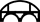 tool.
Color: Set the color and opacity of the on-the-fly Bridging Line tool.
Size: Set the size of the marker set at the vertices of the of the on-the-fly Bridging Line tool.
Line width: Select the line width of the on-the-fly Bridging Line tool.
Line style: Select the style of the on-the-fly Bridging Line tool from a variety of options
Search radius: The Bridging Line tool will connect each vertex created by the tool with features (points and lines) of the selected line and point layers of the Layers selector of the Panel, which reside within the search radius. It will also create a line connecting the tool vertices. This line will act as a possible path line, participating in the analysis as a linestring of new layer. The search radius is defined in the same units as the Tolerance units parameter and its usage is based on Cartesian calculations.
Add bridge lines layer to map: When checked, the lines set by the on-the-fly Bridging Tool will be stored in new Linestring layer that will be added on the map.
Ask before deleting bridging lines: When checked, a confirmation dialog will open after right-clicking on the map while the bridgingLine tool is active, to notify the user that all bridging lines set on map will be deleted. If the user feels confident with the operation of the plugin and understands the possible risk of loosing work, especially when the option to save the bridging lines as a new layer has not ben set, the checkbox may be left unchecked.
Section: Fiber Loss Budget
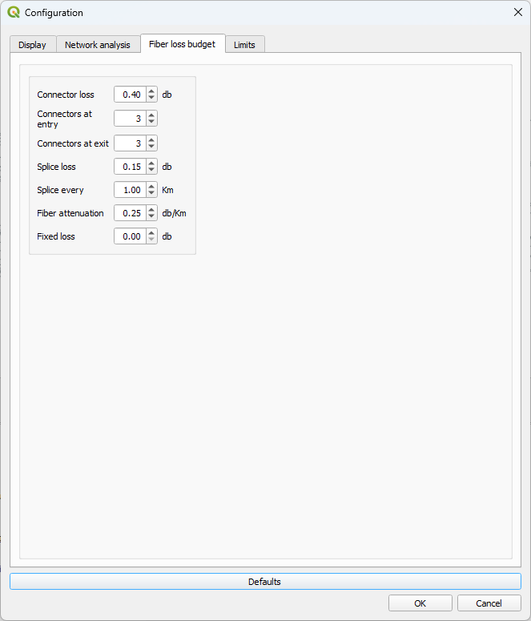
Connector loss: Set the average loss of the fiber optic connectors in use. Unit:db.
Connectors at entry: Set the number of connectors expected at the start point of the analysis. As an example, this can include the connector at the Optical Line Terminal (OLT), the connectors at the Optical Distribution Frames (ODF) etc.
Connectors at exit: Set the number of connectors expected at the end point of the analysis. As an example, this can include the connectors at the customer premises, such as the customer-side ODF and the customer Optical Network Terminal (ONT).
Splice loss: Set the average loss at every optical splice made on the fiber cable. Unit:db.
Splice every: Set the frequency of splices of the fiber optic network. Usually, a design parameter of a fiber optic network sets a splice every so many Kilometers.
Fiber attenuation: Set the average attenuation of the fiber optic cables used in the network. Unit:db.
Fixed loss: This is a fixed value that is added to the loss calculations. It accounts for loss created by certain components, such as optical splitters in an FTTH network. Please note that this value is allocated only to the on-graph cost and not to the entry or exit cost.
Section: Limits
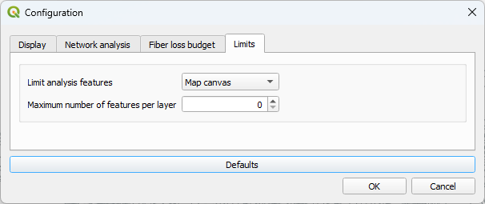
The Dijkstra algotithm investigates several possible routes in its attempt to locate the shortest path. This process may take a long time when there are multiple lines to check. The plugin offers options to minimize the required time by limiting the number of features that the algorithm will be using for the analysis. The options which enforce an extent are based on the assumption that the shortest path will most probably be found between the markers.
Limit geographical extent: Sets a limited geographical extent for the analysis. The following options are available:
No limit: No geographical limit is enforced.Map canvas: The analysis will be limited to the area that is currently visible on the map. Make sure that all markers are visisible.Nx markerextent: The analysis will be limited to an extent N times the area contained by the start, end and middle markers.
Warning 1: The enforced geographical limits may cause the Dijkstra algorithm to fail finding a path. There are cases, such as when the start and end marker are either horizontally or vertically aligned. In such case, the area of the extent rectangle may be so small that a path cannot be found. Even the 10x extent option would not be sufficient to provide a path in the first example of Using the Bridging Line tool. You can rectify this problem without resorting to the worst case scenario of setting No limits, by setting one or more middle markers perpendicular to the straight line between the start and end marker. The plugin calculates the extent rectangle using the coordinates of all markers and therefore the area can be expanded significantly with this solution. Alternatively, the Map canvas limit may provide more control on the way the algorithm selects the possible paths, if the user makes sure that both the start and end markers are visible on screen and the desired possible paths are also visible on screen.
Warning 2: When limits are applied, the shortest path may be different for different limit settings. Always check the path on map to verify that it follows the route of your expectations.
Maximum number of features per layer: This parameter defines the maximum number of features for each of the line layers participating in the analysis. A value of zero indicates no limitation. It is not currently possible to select which features will create the analysis dataset.
Usage
Measurement operations are performed via the Panel.
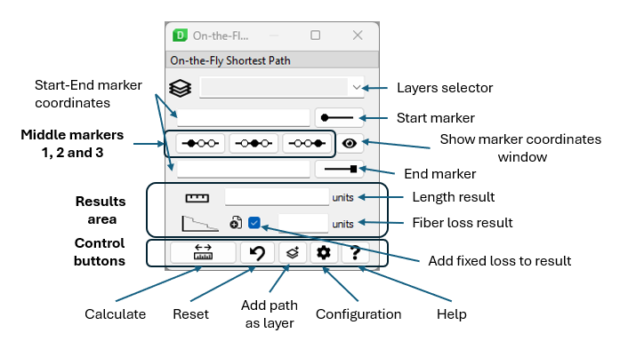
The panel may also appear without presenting the fiber data, depending on the configuration option set in parameter Show result in of the Configuration window.
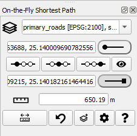
Basics
To make an analysis, follow the procedure:
-
Load in the QGIS project the layer(-s) containing the line network where the analysis of the shortest path will be made. Use the normal QGIS procedures for loading or creating projects or individual layers. Temporary layers are also supported.
-
From the plugin panel, select the desired layers for the analysis in the
Layersselector. Please note that only the layers having a line geometry will appear in the dropdown list of the layers selector. The CRS of the layers will appear enclosed in brackets. If a line layer is not associated with a CRS, it will not appear in the layer selector.Multiple layers may be selected using the selector. The analysis will use the selected layers, regardless if they are visible on the map. See Handling of multiple layers for additional information and precautions.
-
Press the
Startbutton. The button will appear as pressed and the cursor will change to a cross. Navigate on the map and click on the Start point of your choice. -
Press the
Endbutton. The button will appear as pressed and the cursor will change to a cross (if it is not already a cross). Navigate on the map and click on the End point of your choice. -
Press the
Calculate/Measure button. The content of the Length box will change to
button. The content of the Length box will change to Processing...and the routing algorithm will start running. In complex networks, this may take a few seconds. After the algorithm ends, the results will appear on the results area of the Panel, as well as in separate window, if configured so. In case a path is not found, a message will appear for a few seconds on the QGIS message bar.
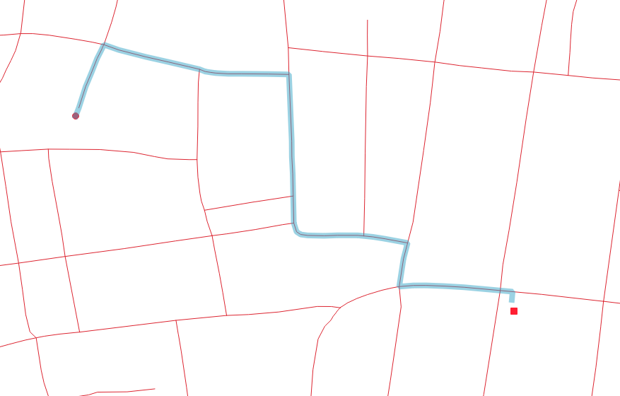
The Start and End markers can be placed either directly on top of the vertices of lines, on top of the segments of lines, or anywhere on the map. The routing algorithm will calculate the nearest line layer from the list of line layers selected in the Layers selector and will connect the marker to the nearest point on that line. The length of line from the marker to the line layer is referred to as the Entry or Exit respectively.
Snapping tool
The instructions below refer to the Plugin snapping provider. You may use only the QGIS snapping provider or even both.
In order to assist the user in the placement of the markers, a snapping indicator tool identifies the map features near the cursor while the marker placement tool is active for any of the markers (start, middle, end), or at the placement of the vertices of the flexjLine, the bridgingPoint and the bridgingLine tools. The functionality depends on the configuration setting Snap method. Snapping tolerance is the distance the plugin uses to search for the closest vertex and/or edge of line segment when you set a new marker. The snapping tolerance is set in the Snap pixels parameter.
When snapping is active, a tooltip is attached to the snapping indicator, presenting a comma separated list of the identified layers where the tool is snapped.
The snapping indicator appears as a rectangle or circle, depending on the value of the selected snap method:
- When the
Vertexoption has been selected, the snapping tool becomes a rectangle. The tool snaps onto the vertices of point and line layers loaded in the QGIS project.
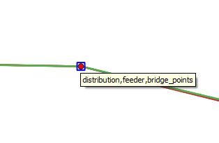
- When the
Edgeoption has been selected, the snapping tool becomes a circle. The tool snaps onto the line layers loaded in the QGIS project. The tool follows the virtual path of the line.
The snapping tool will identify all features within the Snap pixels tolerance. Even if the tool itself is snapped to one of many map features, the tooltip will report all layers within the tolerance. Since the tolerance is defined in pixels, the user may zoom in the map to - possibly - separate the individual map features, in case they do not coincide completely. If you aren’t within the snapping tolerance, the plugin will leave the marker where you release the mouse button, instead of snapping it to an existing vertex and/or segment.
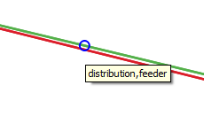 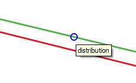 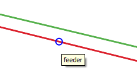
The tooltip feature identification functionality is extremely helpful in cases where overlapping lines of various layers do not allow the user to have an understanding of the network. Using the vertex option, the user may identify the vertices of each layer and understand points where the shortest path may cross the gap between the layers.
The placement of the marker can be set to snap to the coordinates of the snapping tool, according to user selection. This is defined by the parameter Snap to map of the Configuration window. It is suggested to use the snap method Vertex when snapping to actual physical locations, such as a point of a point layer, or the start and end vertex of a line segment.
Please refer to the Configuration section for details on setting the parameters.
Middle markers
In cases where the user would like to force the routing of the algorithm to pass from a selected point, the Middle point functionality can be used. In such case, the algorithm will calculate the shortest path from the Start marker to the Middle marker(s) and then will calculate the new shortest path from the Middle marker to the End marker. This functionality allows the manual routing of a path in a network with multiple routing options, where the user is not interested in the shortest path between the Start and End markers, but would rather like to measure a distance on a selected path.
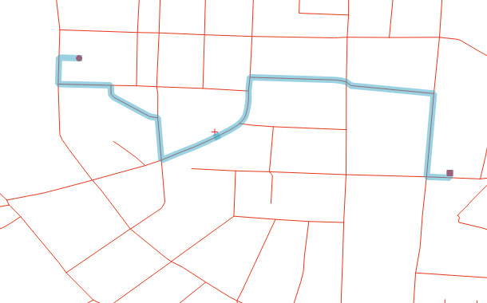
The calculations from marker to marker are totally independent, therefore the path from any marker to the next may partially coincide with the previous path. This can be a desirable behaviour in occasions, e.g. leaving a main road for a pit stop and then return to the main road via the same return path. The user must select the location of the points in a way that the calculations will provide a usable resulting path. These middle markers could be considered as the “Stop points” or “Rest points”, i.e. go from start to end, making stops along the way. To avoid terminology conflicts with the end point of the path and the exit point of the line layer, I avoided the “stop” term and used the term “middle”, although not completely accurate!
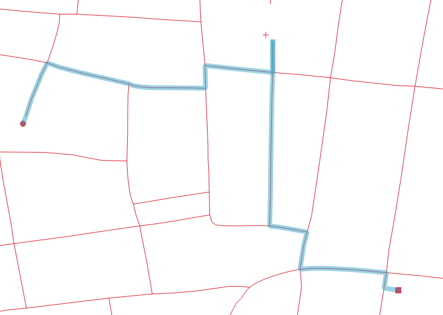
At any time the user may press any of the Start, Middle1 , Middle2 , Middle3 and End buttons and set each of the markers on map. After a marker has been set, the shape of the marker button becomes more round. This signifies that a pair of coordinates are now associated with this marker. If the user decides to change the coordinates of an already set marker, first make sure that the marker button is pressed and then click on the map. The new coordinates will be now associated to the marker.
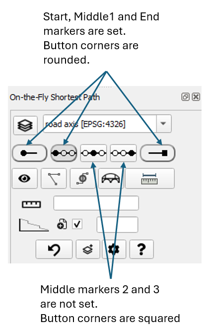
The Middle1 , Middle2 , Middle3 marker buttons, are equipped with the additional functionality of re-setting themselves. If for example a middle marker has been set and the user clicks on the marker button, the marker will be deleted. This functionality does not exist for the Start and Stop marker, since they are considered the most essential parameters of the analysis. Their coordinates can easily be modified pressing the associated marker button. To delete entirely the Start or End marker, you may use the Reset button.
The routing algorithm considers a strict sequence Start -> Middle1 -> Middle2 -> Middle3 -> End of the markers. If any of the middle markers is not set, it is simply ignored. For example, if only Middle3 marker has been set, the sequence will be Start -> Middle3 -> End. This allows to set and/or clear middle markers depending on the particular use case, without requiring to modify middle markers that have been previously set. Always keep in mind that when middle markers are set, the algorithm does not really care about finding the shortest path from start to end, but rather finding the shortest path from start to the first set middle marker, then to the next middle marker etc. and finally to the end point.
Using the flexjLine tool to place coordinate markers
An alternative way to place the start, middle and end markers is provided via the flexjLineTool. Click on the flexjLine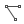 button of the Panel. The button will become dark grey to show that the tool is activated. Navigate to the map and place the first point clicking the left mouse button. This point will become the start point of the path. Move to another point on the map and click the left mouse button. You can continue placing points in sequence. You may place a maximum of 5 points, because the pluging allows for 3 middle markers plus on top of teh start and end marker. If you try to place a 6th marker, the current markers and lines will be deleted and the new marker will be considered the first marker of a new flexjLine.
After you have placed the final point, click on the right mouse button. The vertices of the flexjLine will become the coordinate markers.
To delete all vertices and start a new placement, click on the right mouse button while the flexjLine tool is active. After you press the Calculate button, the coordinates of the vertices will be copied to the markers, and they can be manipulated using the normal procedures.
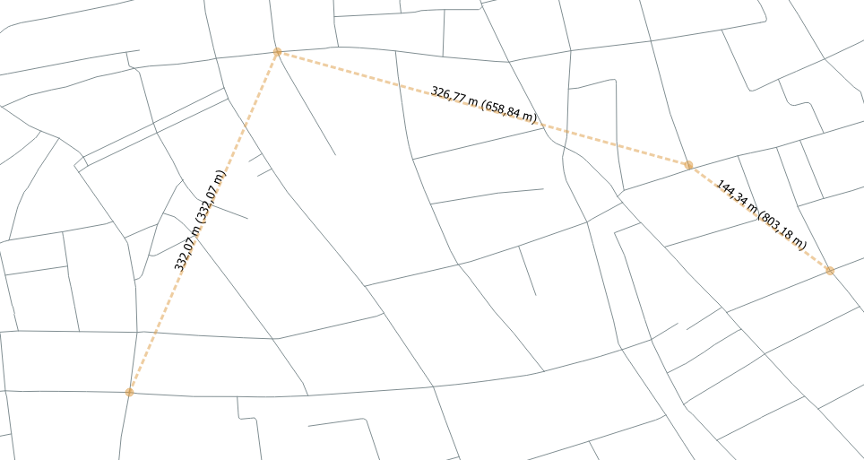
What kind of name is the flexjLine? How is it even pronounced?
The next option would be "Flexible Marker Placement Tool With Measuring Capabilities" or "FMPTWMC". Quite boring, isn't it? Unfortunately, words combining the terms "flexible" and "line" are mostly copyrighted or used as brand or product names. It seems that the leter "j" is the one that could possibly look like an "i" but not really spelled like this. It is also non sensical to use it in the market, so it is the perfect candidate for an open-source solution. It is pronounced in whatever way makes you feel comfortable.
Numeric marker coordinates
In case the user wishes to present the coordinates of all markers, the eye button presents the Marker coordinates window with the required information.
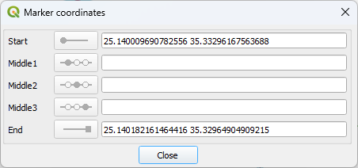
The user may see and even copy the coordinates of each marker. The coordinate format can be set in the configuration dialog. The coordinate values appear as defined by the project CRS, exactly as they are presented in the Coordinate box of the QGIS status bar.
The window can be opened and be placed on screen continuously, without interfering with the rest of the operations. The coordinates of all markers are updated in real-time, both in value as well as the coordinate format set by the Configuration dialog.
Add analysis result as a layer
If you would like to store the results of an analysis to a new layer, you can press the Add as layer button. A new temporary layer will be created. The fields of this layer contain the coordinates of all markers, along with the result data of the analysis. The format of the coordinates (x y, y x, etc.) will be the one set in the Configuration dialog. The result length units and the format of the length will also appear as set in the Configuration dialog. Please note that the coordinate format will follow the current setting of the Configuration dialog, yet the measurement format and units will be those of the measurement that is currently active.
In case the user needs to store results as layers on a continuous basis, the Add result layer parameter of the Configuration window allows creating a layer after each measurement.
Other...
Press the Reset button to hide all visual elements (markers and rubberbands) and clear the existing values for all points, as well as the previously calculated results.
When performing Fiber Loss measurements, you can decide if you would like to add the Fixed Loss amount of the Configuration dialog to the measurement. Check the Add Fixed loss amount if you want to add the amount to the result. Uncheck if you would like to have the measurement without the Fixed loss amount.
You can press the Configure button to enter the Configuration dialog. For detailed explanation of the configuration parameters, visit the Configuration section.
You can press the Help button to present the content of the help page. This is a simplified help page, without images, available when there is no internet connection. If an internet connection is available, click on the hyperlinks to gain access to the full online documentation.
Length measurements
All distance measurements of this plugin are performed using the ellipsoidal method. The particular ellipsoid is the one that is associated with the selected Coordinate Reference System (CRS). See parameter Use ellipsoid of the following CRS of the Configuration window. The ellipsoid id will be presented just below the selected CRS.
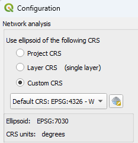
After setting the markers and pressing the Calculate/Measure button, the results will appear in the Panel. If one of the "Window" options is set in the
button, the results will appear in the Panel. If one of the "Window" options is set in the Show result in parameter of the Configuration window, the Results window will also appear.
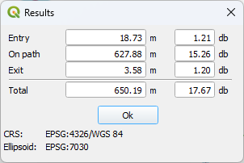
If the user is not interested in Fiber Loss data and has set the Show result in parameter to present only the length, the result window will contain only the length results.
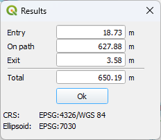
The Entry length and loss is associated with the distance from the Start marker to the nearest point of the line layer, the entry point. This entry point is calculated by the core QGIS network analysis library.
The Exit length and loss is associated with the distance from the End marker to the nearest point of the line layer, the exit point. This exit point is calculated by the core QGIS network analysis library.
The On path length and loss is associated with the path over the selected line layer, from the entry point to the exit point of the line layer, excluding the pieces of length from the start and end marker to the line layer. The Dijkstra algorithm of the core QGIS network analysis library is used to calculate the shortest path.
NOTE: When the Include entry/exit lengths of the configuration dialog is checked, the total length from Start marker to entry point, along the line and from the exit point to End marker appears in the panel. When unchecked, only the length along the line network appears in the panel. Therefore, in the above example, when checked, the Panel will show the total length of 650.19m. If unchecked, the Panel would show 627.88m which is the length "On path". The Results window continues to show all lengths.
Fiber Loss Budget measurements
The loss for the entry/exit path is calculated as the sum of:
-
The number of
Connectors at entryor respectivelyConnectors at exitparameter multiplied by theConnector lossparameter -
The
Splice lossparameter multiplied by the number of splices, which is calculated as the distance from the Start marker to the entry point on the line layer and respectively, from the exit point of the line layer to the End marker, divided by theSplice everyparameter. Although not entirely accurate, neither as concept nor as value, this is an attempt to include the participation of the entry and exit lengths in the calculation of the total number of splices. -
The
Fiber attenuationparameter multiplied by the distance from the Start marker to the entry point on the line layer and respectively, from the exit point of the line layer to the End marker.
The loss along the line layer is calculated as the sum of:
-
The
Fiber attenuationparameter multiplied by the distance from the entry point to the exit point of the line layer -
The
Splice lossparameter multiplied by the number of splices, which is calculated as the distance from the entry point into the line layer until the exit point of the line layer, divided by theSplice everyparameter -
The
Fixed lossparameter, only if the checkboxAdd Fixed loss amountof the plugin panel is checked
NOTE: When the Include entry/exit lengths of the configuration dialog is checked, the total loss from Start marker, along the line and to the End marker appears in the panel. When unchecked, only the loss along the line (attenuation and splice loss) plus the Fixed loss appears in the panel. In the unchecked case, connector losses and fiber attenuation due to the distance of the Start and End markers from the line, is not included in the result value presented in the panel. Yet, the individual losses for all three parts (entry-line-exit) will appear in the Results window.
An example of all elements participating in a fiber loss calculation for an FTTH network is presented below:
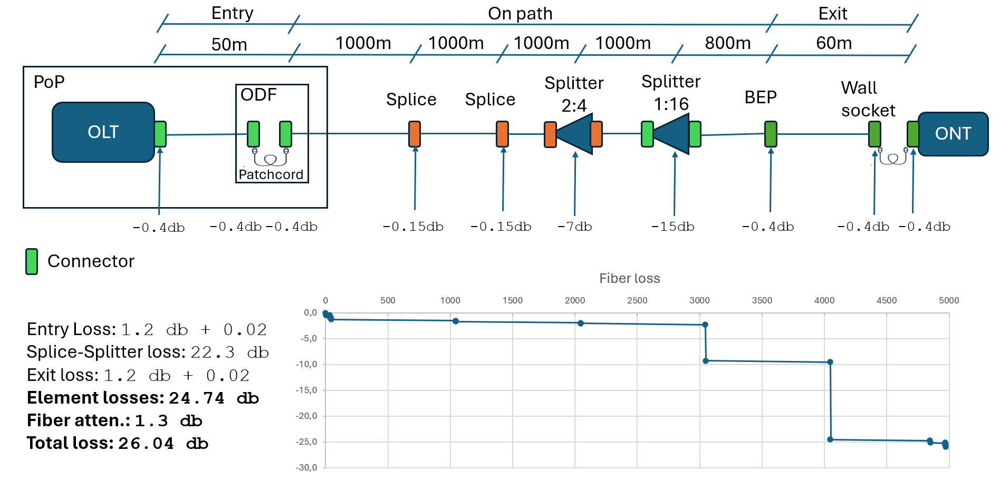
Handling of multiple layers
The plugin allows the selection of multiple layers to perform the shortest path analysis. This feature can be helpful in cases where a path is not fully contained in one layer. As an example, there may be one layer for a primary road network, another layer for the secondary road network, a third one for the tertiary road network and so on. To calculate a path from an arbitrary point to another, the user would normally have to merge all those layers and then run the shortest-path algorithm on the merged layer. The multiple layer selection of the plugin performs the layer merging automatically.
When multiple layers are selected, the analysis will use the selected layers, regardless if they are visible on the map.
The topology tolerance functionality can also be used in order to cross topologically disconnected lines either of the same layer or from lines of one layer to lines of the other. The tolerance refers to vertices of lines and not to the lines themselves. Therefore, if two lines are crossing each other, the rubberband will not jump from one line to the other. Yet, if there are vertices in each line within the topology tolerance, the rubberband will jump from one vertex to the other. This functionality may be desired in some cases, such as a secondary road passing over or under a primary road, where it is not possible to drive from one road to the other.
Use the Snapping tool in both available options (Vertex and Edge) to identify vertices and/or overlapping lines. The tooltip presents all layers within the snapping distance.
With the introduction of the Bridging Point and Bridging Line functionality since version 1.3.0 of the plugin, it is strongly advised to use bridging when individual cases need to be handled, as the bridging behaviour is more controllable than the topology tolerance. When a layer requires several interventions in order to create a contiguous path, use Topology tolerance or combinations of the tools.
Some precautions need to be taken when merging layers:
-
The merging of layers consumes heavily system resources (memory and CPU). In addition, calculations of the plugin are performed in Python, which is not as fast and efficient as the core QGIS language C++. Please select the minimum number of layers required for your work.
-
When multiple layers are selected, the configuration option to use an ellipsoid based on
Layer CRSwill not work. Since several layers are concerned and each layer may have its own CRS, the plugin selects to override this option and to use the Project CRS instead. This is performed in the background and the configuration option of the Configuration dialog does not present this fact, because the user may decide later to select one single layer. In the latter case, theLayer CRSoption will be used, without the user having to re-visit the Configuration dialog. -
When two or more layers are selected, the plugin will be dealing with one single merged layer, consisting of all lines of the initial layers. The user should keep in mind that those layers may have not been created with the consideration that somebody will merge them. Therefore, lines of originally separate layers may cross without a connection, coincide geometrically, run in parallel at a very short distance and other situations that may visually confuse the users, if they do not have a clear view of the vertices of each line. Therefore, the result of finding a path between all those lines should be taken with a grain of salt. Especially when the Topology tolerance feature is activated, the results may be surprising. Users are advised to use layers with a strict topological association between the features of those layers. Otherwise, use the Bridging Point and Bridging Line tools to create bridges between lines of the same or different layers. As an example of the topology tolerance behaviour, a point layer containing the common points between the line layers can help identify the points of transition from one layer to the other. A value of topology tolerance equal to zero, or the minimum possible to cope for snapping inconsistencies, is desirable in that case. Yet, cases could be found where identical coordinates of different layers may provide "bad" results. As an example, when two segments of two separate line layers have a vertex with identical coordinates, a cross will occur, even if it is not wanted or expected. In such cases, use a middle marker to direct the shortest path algorithm to another point which is common for both layers, where it is accepted to cross layers
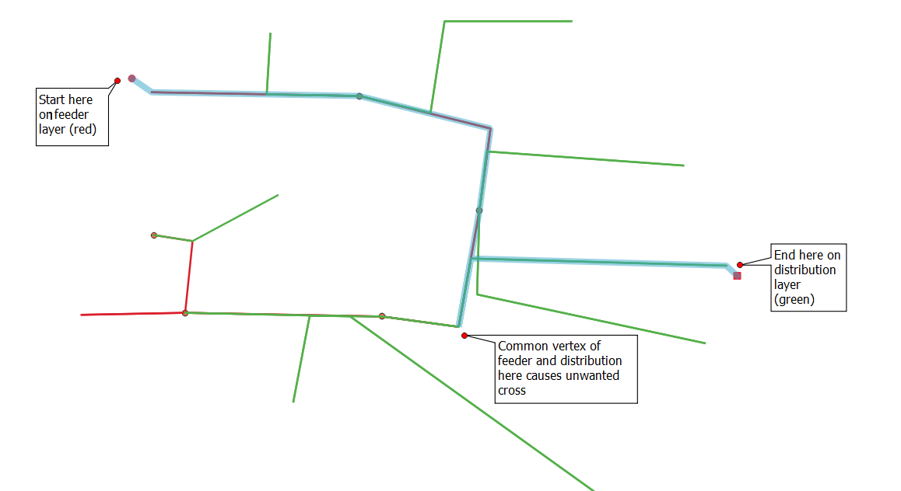
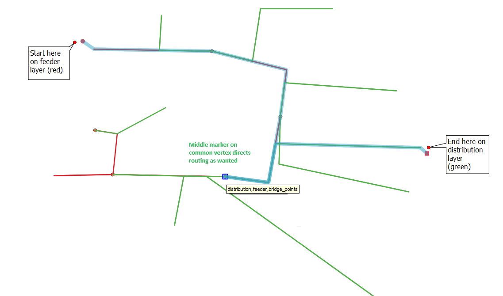
-
User must be careful with coordinate transformations from one CRS to another, in regard to the topological association between vertices of different layers. For example, if the vertex of layer 1 has been snapped topologically to a vertex of layer 2, if layer 1 is saved to a different CRS, the same vertex of the layer 1 in the new CRS may not be topologically connected to the vertex of CRS 2. Use the topology tolerance to overcome such situations. A few millimeters will suffice.
Using the Bridging Point tool
The Bridging Point tool facilitates the network analysis, even when the layers used in the analysis do not provide the topological consistency required for a controlled jump from one line layer to another. Using the Bridging Point tool, the user may set points on the map using the on-the-fly bridgingPointTool or use an existing point layer that the user may select using the Layers selector of the Panel. For each such point, a Search radius defines an area where the bridging point will try to locate lines and connect to each one of them. Since those connecting lines have the bridging point as a common vertex, a path is created that connects the associated lines. This functionality is presented in the figure below:
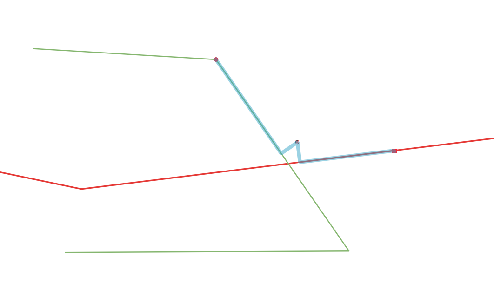
The start marker has been placed on the green layer and the end marker on the red layer. The distance between the point and each of the line layers has been set to be within the bridging point search radius. After the user presses the Calculate button, the plugin creates one new line to connect the point to each line layer. Such line connects the point to the nearest edge of the line, i.e. creating a line that is vertical to the original line. The Dijkstra algorithm considers the new lines as part of the analysis and creates the path crossing the layers.
Please note that the creation of new lines is performed entirely on a memory layer. The layers which are input into the analysis are not modified at all.
In this example, the bridging point has been placed purposely at a point that is visually away from both line layers, for the purpose of presenting how the tool works. In normal operations, the bridging point would be placed much closer to the intersection of both line layers, or exactly at the intersection if snapping is activated.
The Bridging Point tool can be used in two variations:- Bridging Point layers
- On-the-fly Bridging points
Bridging Point layers
The features of Point layers can be set to be used as Bridging Points. Load such point layers in QGIS and then press the Layer button of the Panel window. Select the points layers in the Layer selection window, tab Point layers.
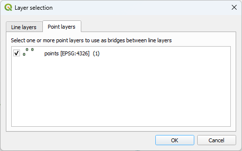
On-the-fly Bridging points
Click on the Bridging Point button of the Panel. The button will become dark grey to show that the tool is activated. Navigate to the map and place one or several on-the-fly bridging points using the left mouse button. The on-the-fly bridging points will remain on the map even if another tool of the plugin or another QGIS tool is activated.
Bridging Point button to activate the tool (if it is not alraedy active) and then press the right mouse button on the map. Handling each individual bridging point to move or delete, is not available. If such actions are required, you may create a temporary point layer where the entire QGIS functionality in creating and handling points, CRS etc. is at your hands. You may select this temporary layer as a Bridging Point layer.
Same layer bridging
The default bridging functionality allows the bridge points to connect to lines of the same layer. This may be useful when the end vertices of lines from the same layer are not topologically identical. It may also be useful in cases where one road has been digitized as two separate lines, while we would like to cross the lanes. Such examples are presented below:
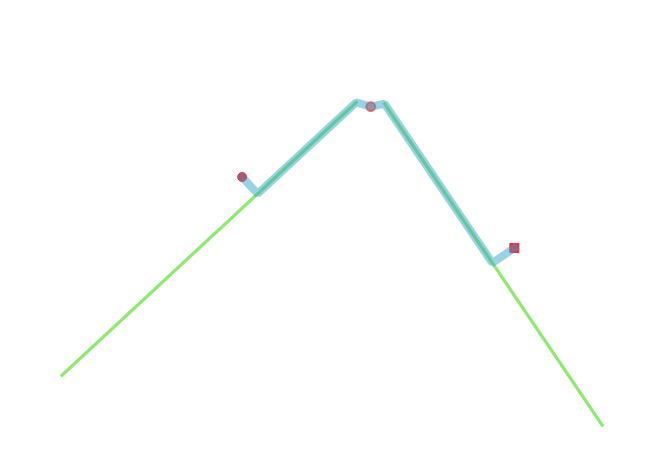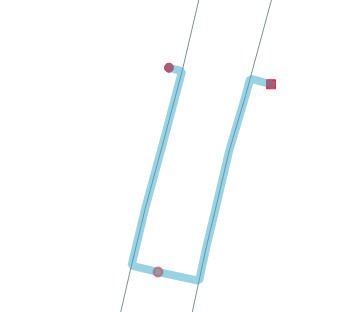
If the configuration option Allow same layer bridging for bridging points is unchecked, the plugin will not connect a point more than once to features of the same line layer, even if they reside within the search radius. The single feature that the plugin will select for connection will be the one with the smallest distance from the point.
Using the Bridging Line tool
The Bridging Line tool facilitates the network analysis even more, by providing connections between several arbitrary points of the original path, within the same layer or separate layers. This functionality is presented in the figure below:
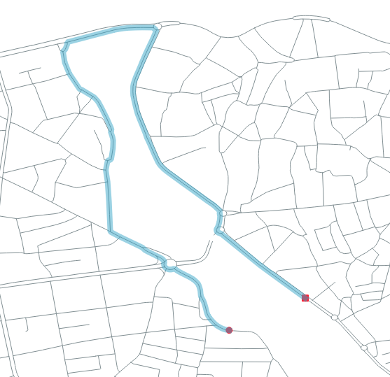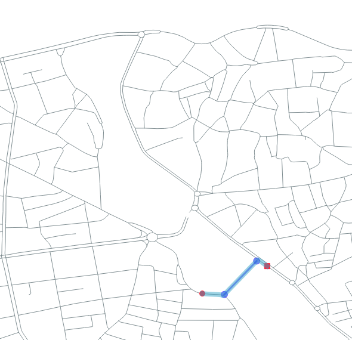
In the first image, there is no bridge and the algorithm selects a long path. In the second image, a bridging line has been created and the algorithm finds a shortest path.
A bridging line may be composed of several vertices, as shown in the image below:
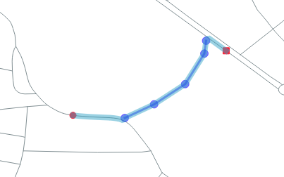
To use the Bridging Line tool, click on the Bridging Line button of the Panel. The button will become dark grey to show that the tool is activated. Navigate to the map and place the first point of the bridge clicking the left mouse button. Move to another point on the map and click the left mouse button. You can continue placing points which will be part of the same bridging line. After you have placed the final point, click on the right mouse button. The bridging line is now finalized. You can create additional bridging lines by clicking the left mouse button again and repeat the procedure.
To delete all bridging lines, click on the Bridging Line button to activate the tool (if it is not alraedy active) and then press the right mouse button on the map. You may activate other tools for other activities and then re-activate the Bridging Line tool, without deleting the bridging lines.
The Bridging Line tool operates as follows:
- The line segments created by the tool are handled by the analysis algorithm as features of one additional line layer.
- The vertices of the lines created by the tool are handled by the analysis as Bridging Points, with a Search radius defined in the configuration parameter of the Bridging Line tool. This search radius is expected to be a small value, certainly smaller than the Bridging Point search radius, since the normal bridging points are expected to be placed between lines, whereas the vertices of bridging lines will most probably be placed directly on top of lines, using the snapping functionality. In addition, one more reason that the Bridging Line search radius should be small, is to avoid one vertex of the bridging line create connections to the lines which the bridge was supposed to connect using the path provided by its line.
Also, it is clarified that, when two points of a bridging line are placed on lines of the same layer, an unchecked
Allow same layer bridging for bridging pointsdoes not apply on the bridge itself, because each one of the vertices of the bridging line is handled individually, so it may not form connections with several lines of the same layer, but the one connection that it is allowed to place will create the desired path from the line, to the vertex and then to the bridging line itself, to the other vertex and finally to the other line. Yes, it may seem a bit complicated, but it is absolutely logical!